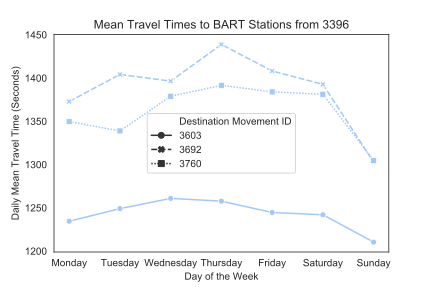

Datahacks 2020 Visualizations
Time Travel Analysis by Time of Day
Time Travel Analysis From Hotspots to Different Stations
Time Travel Analysis from Hotspots to Stations by Time of Day
Time Travel Analysis from Hotspots to Stations by Day of Week
